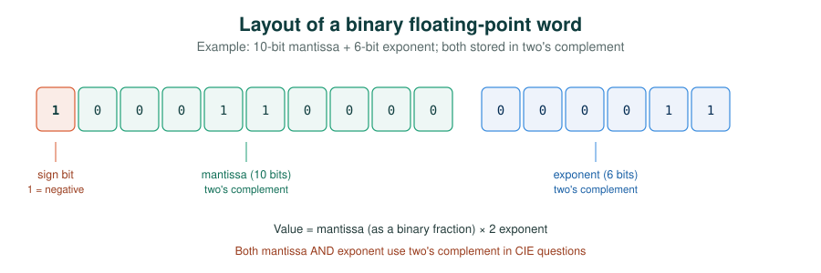
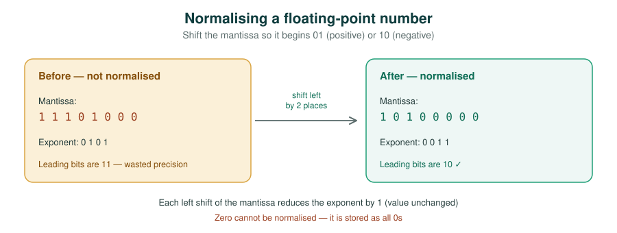
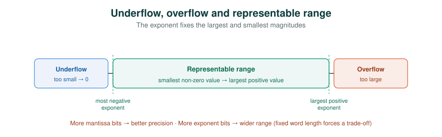

Floating-point binary
What is floating-point binary?
- Floating-point binary is a method of representing real numbers in binary, including fractions and very large or very small values
- Uses scientific notation in base-2: the stored value is
mantissa × 2^exponent - Unlike fixed-point (where the binary point is fixed), the binary point can “float”: its position is recorded by an exponent while the significant digits are held in a mantissa
- In Cambridge 9618 both the mantissa and the exponent are stored in two’s complement form
Why use floating-point?
- Can represent a much wider range of numbers than fixed-point of the same word length
- Allocates bits between range (exponent) and precision (mantissa), so the format suits both very large and very small magnitudes
- Makes efficient use of limited storage (e.g. 8-bit, 16-bit representations)
- Caution: Do not say “floating point is more precise than fixed point of the same width” — it is not. Fixed point is more precise within its narrow range; floating point buys range by spending bits on the exponent, leaving fewer significant bits. This is the central trade-off examined in the question bank.
Components of floating-point
| Component | Description |
|---|---|
| Mantissa | - Holds the significant digits of the number - Stored in two’s complement: the first bit is the sign (0 = +, 1 = −) - For a negative mantissa the remaining bits carry negative place values, not a pure magnitude fraction - After normalisation a positive mantissa starts 0 1… and a negative one starts 1 0… |
| Exponent | - Gives the power of two by which the mantissa is multiplied - Stored in two’s complement (unbiased) - Positive exponent → move the binary point right; negative exponent → move it left |

Range and precision trade-off ★
- More bits for the mantissa → greater precision — each extra mantissa bit halves the smallest difference that can be stored, so more significant digits survive
- More bits for the exponent → greater range — each extra exponent bit doubles the span of powers of two that can be stored, so larger and smaller magnitudes become representable
- Fixed word length forces a trade-off — bits given to the exponent are taken from the mantissa, so a wider range is paid for with coarser precision, and vice versa
- Where the range comes from — the largest positive exponent (e.g.
0111in a 4-bit two’s-complement field) fixes the largest magnitude; the most negative exponent (1000) fixes the smallest non-zero magnitude - Common examiner phrasing: “when the range increases the accuracy decreases; when the range decreases the accuracy increases”
Example in decimal
3.14 × 10³
- Mantissa = 3.14
- Exponent = 3
Example in binary
110.01₂ = 0.11001 × 2³
- Mantissa =
011001…(sign 0, fraction11001padded to the available bits) - Exponent =
0011(+3 in 4-bit two’s complement)
Positive and negative representation
- Positive number: sign bit = 0; the following bits are the magnitude fraction; the exponent shifts the binary point
- Negative number: take the positive binary pattern, invert every bit and add 1 (two’s complement); the exponent is unchanged when only the sign changes
- Example:
−6.25 = 1.00111₂ × 2³→ mantissa100111000000, exponent0011 - Write a normalised positive mantissa as
0.1xxxx × 2ⁿand a normalised negative mantissa as1.0xxxx × 2ⁿ. The1.xxxxx × 2ⁿform with an implicit leading 1 is IEEE-754, not the CIE convention.
Classic questions — format and bit allocation
Describe the effect of changing the allocation of bits used for the mantissa and for the exponent in a floating-point number with a fixed total number of bits.
Answer
Q1(a) One mark per mark point (Max 2)
- When the number of bits in the mantissa is raised, the precision / accuracy of the number represented increases // when the number of bits in the mantissa is lowered, the precision / accuracy of the number represented reduces.
- When the number of bits in the exponent is reduced, the range of numbers that can be represented is reduced // when the number of bits in the exponent is increased, the range of possible numbers that can be represented increases.
- When the range increases the accuracy decreases // When the range decreases the accuracy increases.
Numbers are stored in a computer system using binary floating-point representation with 12 bits for the mantissa, 4 bits for the exponent, two’s complement form for both, and 2 bytes in total.
Outline the effect of changing the number of bits used to store the mantissa to 10 bits, in this system. [3]
Answer
Q2(a) One mark per mark point (Max 3)
- MP1 the precision of the number stored in the mantissa will be reduced
- MP2 the number of bits available for the exponent will increase to 6
- MP3 … this will increase the range of numbers that can be stored.
Numbers are stored in a computer using binary floating-point representation with 8 bits for the mantissa, 8 bits for the exponent, two’s complement form for both the mantissa and the exponent.
Give the largest normalised positive two’s complement binary number that can be stored in this system and state its denary equivalent. The denary answer should be expressed in terms of powers of 2.
Answer
Q2(a) One mark for two’s complement version and one mark for denary version
127 x 2^120 // 0.9921875 x 2^127 // 127/128 x 2^127
Mantissa: 0 1 1 1 1 1 1 1 · Exponent: 0 1 1 1 1 1 1 1
Normalising floating-point numbers
- A floating-point number is normalised when the two most significant bits of the mantissa are different:
01for positive numbers10for negative numbers
Why normalise?
| Reason | Explanation |
|---|---|
| Consistency | Every number has one unique representation |
| Precision | Leading zeros/ones removed so the mantissa carries the maximum number of significant bits |
| Range | The maximum range of numbers can be stored in the minimum number of bits |
| Easier processing | Arithmetic and comparisons are simpler |
Steps to normalise a floating-point number
- Shift the binary point (or the mantissa bits) until the mantissa starts with
01(positive) or10(negative) - Adjust the exponent by the number of places moved so the value is unchanged
- Remember: the mantissa is two’s complement; only the direction of the shift controls the exponent sign
Normalising in more detail ★
- Why
01/10works — after normalisation the sign bit and the next bit are opposite, so no leading sign-extension bits are wasted and the mantissa holds the maximum number of significant digits - Keep the two viewpoints distinct (this is the most common source of wrong exponents):
- Moving the binary point (the written position of the point): point moves left → exponent increases; point moves right → exponent decreases
- Shifting the mantissa bits with the point fixed: bits shift right → exponent increases; bits shift left → exponent decreases
- These are the same rule seen from opposite sides. A fraction such as
0.00000011…has its bits shifted left to reach0.11…, so its exponent decreases (becomes negative); an integer such as10101.0011has its point moved left to1.01010011, so its exponent increases (becomes positive).
- Negative example (fraction with leading ones) —
1.1101000→ shift bits left 2 places →1.0100000, exponent reduced by 2 - Zero cannot be normalised — there is no significant
1to shift, so zero is defined as all bits0

Worked example
- Before normalisation:
- Mantissa =
00011 - Exponent =
0010(+2)
- Mantissa =
- Process:
- Move the binary point 2 places right → mantissa =
01100 - Decrease the exponent by 2 → exponent =
0000
- Move the binary point 2 places right → mantissa =
- After normalisation:
- Mantissa =
01100 - Exponent =
0000
- Mantissa =
- Check the value is unchanged:
0.0011 × 2² = 0.11 × 2⁰
Classic questions — normalisation
Numbers are stored in a computer system using binary floating-point representation with 12 bits for the mantissa, 4 bits for the exponent, two’s complement form for both mantissa and exponent.
Write the normalised floating-point representation of the following positive binary number using this system.
0.00000001110101101
Answer
Q2(a) One mark per mark point (Max 2)
- MP1 Correct mantissa
- MP2 Correct exponent
Mantissa: 0 1 1 1 0 1 0 1 1 0 1 0 (12 bits)
Exponent: 1 0 0 1 (4 bits)
A binary number is stored in the computer system (8-bit mantissa, 8-bit exponent, two’s complement for both).
Mantissa 0 0 0 1 1 1 1 0 · Exponent 0 0 0 1 1 0 0 0
(i) State why the number is not normalised. [1]
(ii) Write the normalised floating-point representation of the number. [2]
Answer
Q1©(i) The mantissa does not begin with 01/10 (as its most significant bits) // the mantissa begins with 00 // first two digits are the same.
Q1©(ii) One mark for each point:
- Correct mantissa
- Correct exponent
Mantissa 0 1 1 1 1 0 0 0 · Exponent 0 0 0 1 0 1 1 0
Explain the reason why binary numbers are stored in normalised form.
Answer
Q1(b)
- To store the maximum range of numbers in the minimum number of bytes / bits
- Normalisation minimises the number of leading zeros/ones represented;
- Maximising the number of significant bits // maximising the (potential) precision / accuracy of the number for the given number of bits
- … enables very large / small numbers to be stored with accuracy;
- Avoids the possibility of many numbers having multiple representations
Denary to floating-point binary
How do you convert denary to floating-point binary?
- For the following conversions we assume a 12-bit mantissa (bit 0 is the sign) and a 4-bit exponent (two’s complement), unless the question says otherwise
- Convert the number into binary (integer part + fractional part)
- Example: 5 =
101₂, 0.25 =0.01₂, so 5.25 =101.01₂
- Example: 5 =
- Normalise the binary into the form
0.1… × 2ⁿ(positive) or1.0… × 2ⁿ(negative)- Count how many places the binary point moves = the magnitude of the exponent
- Build the mantissa: write the sign bit first, then the significant bits, padding on the right with zeros to fill the field
- For a negative number, take the two’s complement of the whole mantissa and keep the
10…leading pattern
- For a negative number, take the two’s complement of the whole mantissa and keep the
- Convert the exponent to its two’s-complement field (positive = ordinary binary; negative = invert and add 1)
- Write the final pair as (Mantissa | Exponent)
Example: +5.25
5.25 = 101.01₂ = 0.10101 × 2³- Mantissa (12 bits) =
010101000000 - Exponent (4 bits) =
0011
Example: −5.25
- Start from the normalised positive form:
+5.25 = 0.10101 × 2³, mantissa010101000000, exponent0011 - Negate the mantissa by taking its two’s complement: invert
010101000000→101010111111, then add 1 →101011000000 - The result
1.01011000000begins10, so it is already normalised; the exponent is unchanged at0011 - Check:
1.01011₂in two’s complement =−1 + 0.01011₂ = −0.65625, and−0.65625 × 2³ = −5.25
Summary table
| Value | Binary | Normalised | Mantissa (12-bit) | Exponent (4-bit) |
|---|---|---|---|---|
| +5.25 | 101.01 |
0.10101 × 2³ |
010101000000 |
0011 |
| −5.25 | −101.01 |
1.01011 × 2³ |
101011000000 |
0011 |
Quiz (retained from the original note)
Numbers are stored in two different computer systems by using floating-point representation.
- System 1 uses: 10 bits for the mantissa, 6 bits for the exponent, two’s complement form for both the mantissa and the exponent.
- System 2 uses: 8 bits for the mantissa, 8 bits for the exponent, two’s complement form for both the mantissa and the exponent.
Calculate the normalised floating-point representation of 113.75 and show how it would be represented in each of these two systems. Show your working. [4]
Answer
- conversion of 113.75 to binary seen
1110001.11[1 mark] - exponent for normalisation 7 converted to binary
111OR evidence of binary [1 mark] - point moved 7 places OR evidence of finding exponent = 7 [1 mark]
- system 1 answer [1 mark]
- system 2 answer showing correct version from system 1 [1 mark]
System 1
| Mantissa | Exponent |
|---|---|
0111000111 |
000111 |
System 2
| Mantissa | Exponent |
|---|---|
01110001 |
00000111 |
Classic questions — denary to floating-point
Numbers are stored in a computer system using binary floating-point representation with 10 bits for the mantissa, 6 bits for the exponent, two’s complement form for both the mantissa and the exponent.
Calculate the normalised binary floating-point representation of –10.8125 in this system. Show your working.
Answer
Q3(a) One mark per mark point (Max 3): MP1 correct method to find the binary number; MP2 correct use of exponent; MP3 correct answer in the space provided.
Working: –10.8125 → positive binary version of 10.8125 = 01010.1101 // two’s complement version – bits flipped and 1 added = 10101.0011 // –8+2+0.5+0.25+0.0625 // –16+4+1+0.125+0.0625.
Movement of binary point by 4 places → mantissa 1010100110, exponent 000100.
Allow other methods of working.
Numbers are stored in a computer using binary floating-point representation with 12 bits for the mantissa, 4 bits for the exponent, two’s complement form for both the mantissa and the exponent.
Calculate the normalised binary floating-point representation of -49.1875 in this system. Show your working.
Answer
Q4(b) One mark per mark point (Max 2)
- correct mantissa — exact answer only:
1 0 0 1 1 1 0 1 1 0 1 0 - correct exponent — exact answer only:
0 1 1 0
One mark per mark point for working (Max 2)
- number converted to binary e.g. positive binary version of 49.1875 =
0110001.0011// two’s complement version bits flipped and 1 added =1001110.1101//-64 + 8 + 4 + 2 + .5 + .25 + .0625//-64 + 14.8125 - use of the exponent e.g. moving the binary point 6 places / × 2^6.
Numbers are stored in a computer using binary floating-point representation with 12 bits for the mantissa, 4 bits for the exponent, two’s complement form for both the mantissa and the exponent.
Calculate the normalised binary floating-point representation of +124.4375 in this system. Show your working.
Answer
Q2(a) Two marks for working
- number converted to binary (0)1111100.0111
- use of exponent = 7 // Moving binary point the correct number (7) of places
One mark for correct answer
- Mantissa (12 bits):
0 1 1 1 1 1 0 0 0 1 1 1 - Exponent (4 bits):
0 1 1 1
Floating-point binary to denary
How do you convert floating-point binary to denary?
- Assume the same 12-bit mantissa / 4-bit exponent layout unless the question specifies another
- Read the exponent and convert it from two’s complement to denary
- Read the mantissa sign (first bit: 0 = +, 1 = −); remember the whole mantissa is two’s complement
- Apply the exponent — write the mantissa with the binary point immediately after the sign bit, then move it right for a positive exponent or left for a negative one
- Evaluate the resulting bit pattern: for a negative pattern, use two’s-complement place values (the sign bit carries the largest negative weight)
- Apply the sign if your method evaluated the magnitude separately
Example: positive result
Mantissa: 010101000000
Exponent: 0011
- Exponent
0011₂ = +3; sign bit 0 → positive - Restore the point:
0.10101₂ - Apply exponent:
0.10101 × 2³ = 101.01₂ = +5.25₁₀
Example: negative result
Mantissa: 101011000000
Exponent: 0011
-
Exponent
0011₂ = +3; sign bit 1 → negative -
The mantissa
1.01011000000is in two’s complement, so its value is−1 + 0.01011₂ = −0.65625 -
Apply exponent:
−0.65625 × 2³ = −5.25₁₀ -
Equivalently, write
1.01011 × 2³ = 1010.11₂and evaluate as two’s complement:−8 + 2 + 0.5 + 0.25 = −5.25 -
Always handle the sign / two’s-complement weighting explicitly; the fraction bits of a negative mantissa are not a plain positive magnitude
-
Show the exponent step if the question asks to “show your working”
Summary table
| Mantissa | Exponent | Result (Denary) |
|---|---|---|
010101000000 |
0011 |
+5.25 |
101011000000 |
0011 |
−5.25 |
Classic questions — floating-point to denary
Numbers are stored in a computer system using binary floating-point representation with 12 bits for the mantissa, 4 bits for the exponent, two’s complement form for both the mantissa and the exponent.
Calculate the denary value of the given normalised binary floating-point number. Show your working.
Mantissa 1 0 1 1 0 1 0 0 0 1 1 0 · Exponent 0 1 1 0
Answer
Q3(a) Two marks for working (Max 2):
- correct use of exponent seen;
- correct conversion method from binary to denary.
One mark for correct answer (Max 1).
Working: 1011010.00110 (moving bp 6 places to right) // multiply by 64 / 2⁶.
Evaluation of two’s complement −64 +16 + 8 + 2 + 0.125 + 0.0625 // −64 +16 + 8 + 2 + 1/8 + 1/16 // 32 + 4 + 1 + 0.5 + 0.25 + 0.0625 // 32 + 4 + 1 + 1/2 + 1/4 + 1/16 // −1 + 1/4 + 1/8 + 1/32 + 1/512 + 1/1024 x 64.
Answer: −37.8125 // −37 13/16.
Guidance: Allow other methods of working.
Numbers are stored in a computer system using binary floating-point representation with 10 bits for the mantissa, 6 bits for the exponent, two’s complement form for both the mantissa and the exponent.
Calculate the denary value of the given normalised binary floating-point number. Show your working.
Mantissa 0 1 1 1 1 0 0 1 0 1 · Exponent 0 0 1 0 1 1
Answer
Q2(a) Two marks for working:
- correct calculation/application of exponent seen
- correct method to find the final answer
Working:
- Exponent =
8 + 2 + 1 = 11 // = 0.111100101 × 2¹¹// = 11110010100.0(moving bp 11 places to right)- Method to find the answer:
// 1024 + 512 + 256 + 128 + 16 + 4
One mark for correct answer
- Denary value: 1940
Real numbers are stored in a computer system using floating-point representation with 10 bits for the mantissa, 6 bits for the exponent, two’s complement form for both the mantissa and the exponent.
Calculate the denary value of the given normalised floating-point number. Show your working.
Mantissa 0 1 0 0 1 1 1 1 0 0 · Exponent 0 0 1 0 0 1
Answer
Q1(a) One mark per mark point (Max 3)
- MP1 conversion of exponent
001001to 9 - MP2 application of exponent to mantissa to go from
0.100111100to100111100//256 + 32 + 16 + 8 + 4seen //64/128 + 8/128 + 4/128 + 2/128 + 1/128 = 79/128//1/2 + 1/16 + 1/32 + 1/64 + 1/128 = 79/128 - MP3 correct answer = 316
Approximation, rounding, underflow and overflow
Why approximation is unavoidable
- Real numbers are stored using floating-point binary with a limited number of bits for the mantissa and exponent
- Not all real numbers can be represented exactly — only approximated
- Some decimal values cannot be represented precisely in binary:
Decimal: 0.1
Binary: 0.000110011001100... (recurring)
- The binary value must be truncated or rounded to fit the mantissa, introducing a small error
- Consequences: calculations using approximated values may accumulate errors; final results may be slightly inaccurate
Rounding errors
Truncation and rounding errors ★
- Truncation — the bits that do not fit in the mantissa are simply discarded, so the stored value is biased towards zero
- Rounding — if the first discarded bit is
1, 1 is added to the last kept bit; the error is smaller than with truncation but the value is still not exact - Accumulation — every operation re-rounds its result to the available mantissa bits, so repeated addition (e.g. adding
0.1thousands of times) drifts further from the exact answer - Practical effect — because
0.1 + 0.2is stored as an approximation of0.3, two calculated values should be compared within a tolerance rather than with= - A recurring exam case: a finite decimal fraction such as
0.20has no exact binary form, so storing it loses precision even though the integer part fits
Classic questions — rounding errors
Explain why a binary representation is sometimes only an approximation to the real number it represents.
Answer
Q1(b) One mark per mark point (Max 3)
- MP1: Real numbers (can) have a fractional part (such as 1/3 and ½) / (such as 0.4 and 0.25)
- MP2: The fixed length of the storage means that you can’t store very large / very small numbers
- MP3: Binary numbers represent numbers based on powers of 2, with limited fractional representations such as 1/2, 1/4, 1/8, 1/16, etc.
- MP4: It isn’t possible to store all fractions with the level of precision provided by this system
- MP5: …the fractional part of the number is as close as possible within these constraints.
Real numbers are stored in a computer using floating-point representation with 12 bits for the mantissa, 4 bits for the exponent, two’s complement form for both the mantissa and exponent.
Explain the problem that will occur in storing the normalised floating-point representation of +65.20 in this system.
Answer
Q1(b) One mark per mark point (Max 2)
- MP1: the decimal fraction 0.20 cannot be represented exactly (the closest is 0.25 / 0.1875)
- MP2: therefore, there will be a loss of precision due to a rounding error/truncation
Numbers are stored in a computer using floating-point representation with 12 bits for the mantissa, 4 bits for the exponent, two’s complement form for both mantissa and exponent.
The binary number 1011100.011001 is stored in this system (normalised mantissa 010111000110, exponent 0111).
State the consequence of storing the binary number as a floating-point number in this system. Justify your answer. [2]
Answer
Q1a(ii)
- Consequence: The precision/accuracy of the number would be reduced
- Justification: … because the least significant bits of the original number have been truncated/lost // the original number had 13 bits / 14 bits with sign but the mantissa can only store 12 bits
Underflow
Underflow and overflow ★
- Underflow occurs when the result of a calculation has an absolute value smaller than the smallest non-zero value the system can store — the exponent required is too negative for the exponent field
- Result: the value is stored as 0
- Consequence: loss of precision; can affect accuracy in scientific or financial calculations

Wording caveat for exams (not part of the mark scheme): the mark scheme for 2026 Summer P32 Q3(b) says the limit depends on “the number of bits in the mantissa” — underflow is in fact governed by the exponent field. The 2022 Winter P32 Q1© wording “too small to be precisely represented” describes rounding/truncation, not underflow. In your own answer write “magnitude below the smallest representable non-zero value → exponent underflows → result becomes 0”.
Classic questions — underflow
Describe one example of a situation that could cause underflow to occur and the consequences of this underflow.
Answer
Q3(b) One mark per mark point (Max 2): MP1 When a calculation is performed on a normalised floating-point number // allow a specific example; MP2 … so that the result obtained is less than the lowest possible value that can be stored in the system an underflow will occur // the exponent is too small / too negative for the number of bits in the mantissa, so the result becomes zero.
State when underflow occurs in a binary floating-point system.
Answer
Q1© One mark per point
- Following an arithmetic/logical operation
- … the result is too small to be precisely represented in the available system // When the number of bits is not enough / too small for the computer’s allocated word size / to represent the binary number
Overflow
- Overflow occurs when a number (or the result of a calculation) is too large in magnitude to be stored — the exponent needed exceeds the largest positive exponent available
- Example: adding 91.5 and 123.25 in a 12-bit/4-bit system gives 214.75, but the largest storable value is about 127.9375, so an exponent of 8 would be needed
- Consequences: the most significant bits are lost, the result is wrong, or the program returns an infinity / error / wraparound value
- Note: A precision failure is not overflow: 513 needing 11 significant bits in a 10-bit mantissa is truncated to 512, which is a loss of precision (the 2021 Summer P31 Q1(d) mark scheme’s use of “overflow” for this case is non-standard — describe it as precision loss in your own answer).
Classic questions — overflow
Numbers are stored in a computer system using binary floating-point representation with 12 bits for the mantissa, 4 bits for the exponent, two’s complement form for both the mantissa and the exponent.
Explain the problem that would occur if the two binary floating-point numbers representing the denary numbers 91.5 and 123.25 were added together and the result stored in the given system.
Answer
Q5(b) One mark per mark point (Max 3): MP1 If the two numbers were added together, the value would be 214.75; MP2 This value exceeds the highest/largest number that can be stored in this system with an exponent of 7, (which is 127.9375); MP3 An exponent of 8 would be required to increase the range of possible numbers beyond 128; MP4 Overflow would occur.
Describe one example of a situation that could cause an overflow to occur and the consequences of such an overflow. [3]
Answer
Q2(b) One mark per mark point (Max 3) MP1 a process involving a calculation / the multiplication of two large numbers could take place MP2 the result might be outside of the range of values possible to store in the given system MP3 … leading to the most significant bits of the mantissa/exponent being lost (which is an overflow)
Summary table
| Issue | Cause | Effect |
|---|---|---|
| Rounding error | Real number can’t be exactly represented in binary | Slight inaccuracies in results |
| Underflow | Magnitude too small to be stored (exponent too negative) | Value becomes 0 |
| Overflow | Magnitude too large to be stored (exponent too positive) | Incorrect result or program error |
Exam Question Index
| Sub-question | Exam point | Source |
|---|---|---|
| P31 Q3(a) | Floating-point ↔ denary conversion + Normalisation | 2026 Summer P31 Q3(a) |
| P31 Q3(b) | Floating-point ↔ denary conversion | 2026 Summer P31 Q3(b) |
| P32 Q3(a) | Floating-point ↔ denary conversion | 2026 Summer P32 Q3(a) |
| P32 Q3(b) | Approximation: underflow & overflow | 2026 Summer P32 Q3(b) |
| P33 Q5(a) | Floating-point ↔ denary conversion + Normalisation | 2026 Summer P33 Q5(a) |
| P33 Q5(b) | Approximation: underflow & overflow | 2026 Summer P33 Q5(b) |
| P31 Q2(a) | Normalising floating-point numbers | 2025 Summer P31 Q2(a) |
| P31 Q2(b) | Floating-point ↔ denary conversion + Normalisation | 2025 Summer P31 Q2(b) |
| P32 Q2(a) | Floating-point ↔ denary conversion + Normalisation | 2025 Summer P32 Q2(a) |
| P32 Q2(b) | Floating-point ↔ denary conversion | 2025 Summer P32 Q2(b) |
| P33 Q2(a) | Binary floating-point format | 2025 Summer P33 Q2(a) |
| P33 Q2(b) | Floating-point ↔ denary conversion + Normalisation | 2025 Summer P33 Q2(b) |
| P31 Q2(a) | Normalising floating-point numbers | 2025 Winter P31 Q2(a) |
| P31 Q2(b) | Floating-point ↔ denary conversion + Normalisation | 2025 Winter P31 Q2(b) |
| P32 Q2(a) | Floating-point ↔ denary conversion | 2025 Winter P32 Q2(a) |
| P32 Q2(b) | Floating-point ↔ denary conversion + Normalisation | 2025 Winter P32 Q2(b) |
| P33 Q2(a) | Binary floating-point format | 2025 Winter P33 Q2(a) |
| P33 Q2(b) | Approximation: underflow & overflow | 2025 Winter P33 Q2(b) |
| P31 Q1(a) | Floating-point ↔ denary conversion | 2024 Summer P31 Q1(a) |
| P31 Q1(b) | Floating-point ↔ denary conversion + Normalisation | 2024 Summer P31 Q1(b) |
| P32 Q1(a) | Binary floating-point format | 2024 Summer P32 Q1(a) |
| P32 Q1(b) | Floating-point ↔ denary conversion + Normalisation | 2024 Summer P32 Q1(b) |
| P31 Q1(a) | Floating-point ↔ denary conversion + Normalisation + Rounding errors | 2024 Winter P31 Q1(a) |
| P31 Q1(b) | Floating-point ↔ denary conversion | 2024 Winter P31 Q1(b) |
| P32 Q4(a) | Floating-point ↔ denary conversion | 2024 Winter P32 Q4(a) |
| P32 Q4(b) | Floating-point ↔ denary conversion + Normalisation | 2024 Winter P32 Q4(b) |
| P31 Q1(a) | Floating-point ↔ denary conversion + Normalisation + Binary floating-point format | 2023 Summer P31 Q1(a) |
| P31 Q1(b) | Rounding errors + Binary floating-point format | 2023 Summer P31 Q1(b) |
| P32 Q1(a) | Normalising floating-point numbers | 2023 Summer P32 Q1(a) |
| P32 Q1(b) | Rounding errors | 2023 Summer P32 Q1(b) |
| P31 Q1(a) | Floating-point ↔ denary conversion + Normalisation | 2023 Winter P31 Q1(a) |
| P31 Q1(b) | Rounding errors | 2023 Winter P31 Q1(b) |
| P32 Q1(a) | Floating-point ↔ denary conversion + Normalisation | 2023 Winter P32 Q1(a) |
| P32 Q1(b) | Rounding errors | 2023 Winter P32 Q1(b) |
| P31 Q1(a) | Floating-point ↔ denary conversion + Normalisation | 2022 Winter P31 Q1(a) |
| P31 Q1(b) | Floating-point ↔ denary conversion + Normalisation | 2022 Winter P31 Q1(b) |
| P31 Q1©(i) | Normalising floating-point numbers | 2022 Winter P31 Q1©(i) |
| P31 Q1©(ii) | Normalising floating-point numbers | 2022 Winter P31 Q1©(ii) |
| P32 Q1(a) | Binary floating-point format | 2022 Winter P32 Q1(a) |
| P32 Q1(b) | Floating-point ↔ denary conversion | 2022 Winter P32 Q1(b) |
| P32 Q1© | Approximation: underflow & overflow | 2022 Winter P32 Q1© |
| P31 Q1(a) | Floating-point ↔ denary conversion + Normalisation | 2021 Summer P31 Q1(a) |
| P31 Q1(b) | Floating-point ↔ denary conversion | 2021 Summer P31 Q1(b) |
| P31 Q1© | Normalising floating-point numbers | 2021 Summer P31 Q1© |
| P31 Q1(d)(i) | Rounding errors + Binary floating-point format | 2021 Summer P31 Q1(d)(i) |
| P31 Q1(d)(ii) | Binary floating-point format | 2021 Summer P31 Q1(d)(ii) |
| P31 Q1a(i) | Normalising floating-point numbers + Rounding errors | 2021 Winter P31 Q1a(i) |
| P31 Q1a(ii) | Rounding errors | 2021 Winter P31 Q1a(ii) |
| P31 Q1b | Normalising floating-point numbers | 2021 Winter P31 Q1b |